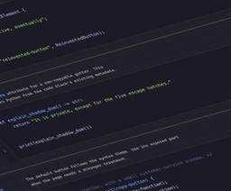

CSS-Tricks
https://css-tricks.com
CSS-Tricks is where folks around the world come to learn about front-end code and everything related to it, including HTML, CSS, and yes, CSS.
フィード

Let’s Use the Emergent CSS random() Function in all the Browsers
CSS-Tricks
The journey to create a polyfill for the upcoming CSS random() function that works in all browsers.Let’s Use the Emergent CSS random() Function in all the Browsers originally handwritten and published with love on CSS-Tricks. You should really get the newsletter as well.
5日前

What’s !important #18: <geolocation>, Syntax ::highlight()ing, named-feature(), and More
CSS-Tricks
Well, that’s a wrap. No, not a flex-wrap, but rather today marks a new day, week, month, season, aaaand new edition of What’s important (#18), bringing you the best content that developers have produced over the last couple of weeks or so.What’s !important #18: <geolocation>, Syntax ::highlight()ing, named-feature(), and More originally handwritten and published with love on CSS-Tricks. You should really get the newsletter as well.
5日前

Creating Web Widgets Using the Document Picture-in-Picture API
CSS-Tricks
The general idea is that we create a Document Picture-in-Picture window (DPIP window), and then we put HTML, CSS, and JavaScript into it.Creating Web Widgets Using the Document Picture-in-Picture API originally handwritten and published with love on CSS-Tricks. You should really get the newsletter as well.
9日前
animation-trigger
CSS-Tricks
The CSS animation-trigger property allows you to delay the start of a CSS animation until a specific trigger occurs.animation-trigger originally handwritten and published with love on CSS-Tricks. You should really get the newsletter as well.
10日前
MicroLighter: Syntax Highlighter
CSS-Tricks
Syntax highlighting for code blocks without the complicated markup, spans, classes, and bloated JavaScript, courtesy of Uncle Dave.MicroLighter: Syntax Highlighter originally handwritten and published with love on CSS-Tricks. You should really get the newsletter as well.
11日前
WordPress PHP-Only Block Registration
CSS-Tricks
Seven and half years after blocks arrived in Core, WordPress introduces a way to build blocks without React annd build pipelines. All you need is PHP.WordPress PHP-Only Block Registration originally handwritten and published with love on CSS-Tricks. You should really get the newsletter as well.
12日前
Resolved: CSS Class Prefix Selector
CSS-Tricks
A newly resolved proposal would allow us to select classes that are a prefix for variations with a wildcard, like .prefix-*.Resolved: CSS Class Prefix Selector originally handwritten and published with love on CSS-Tricks. You should really get the newsletter as well.
15日前
CSS Navigation Matching, Early Days
CSS-Tricks
Apply a style when someone navigates from one specific page to another. The idea being it'd make the sources for cross-document view transitions declarative in CSS rather than managing that stuff in JavaScript.CSS Navigation Matching, Early Days originally handwritten and published with love on CSS-Tricks. You should really get the newsletter as well.
17日前
WordPress.com Student Plan
CSS-Tricks
As someone who teaches beginning web development, I find that building a WordPress site makes for a great final project. Hosting those projects has always been a roadblock though.WordPress.com Student Plan originally handwritten and published with love on CSS-Tricks. You should really get the newsletter as well.
17日前
Dark mode toggles: two states are enough
CSS-Tricks
Lea's pushing back on light/dark mode implementations that display three state options for visitors: light, dark, and system.Dark mode toggles: two states are enough originally handwritten and published with love on CSS-Tricks. You should really get the newsletter as well.
19日前
What’s !important #17: Custom Highlight API, CSS Navigation Matching, Fixing text-stroke, and More
CSS-Tricks
Plus, how to style skeleton UIs, how to enable diagonal scrolling, how images can overflow themselves, and yet, still more. Basically, how to do a lot of really cool (CSS) stuff.What’s !important #17: Custom Highlight API, CSS Navigation Matching, Fixing text-stroke, and More originally handwritten and published with love on CSS-Tricks. You should really get the newsletter as well.
22日前
Blocked aria-hidden: The Warning is Right, and Every Fix You’ve Found is Wrong
CSS-Tricks
The warning is correct. And the recommended fixes you've probably seen are wrong. Here's what you can do instead to properly fix the issue.Blocked aria-hidden: The Warning is Right, and Every Fix You’ve Found is Wrong originally handwritten and published with love on CSS-Tricks. You should really get the newsletter as well.
24日前
Animating CSS border-image
CSS-Tricks
Border images are an overlooked feature. One neat fact is that border image slices can run across entire borders on an element, and animating it creates beautiful effects.Animating CSS border-image originally handwritten and published with love on CSS-Tricks. You should really get the newsletter as well.
1ヶ月前
SmashingConf Freiburg 2026, September 7-10
CSS-Tricks
Smashing Magazine’s in-person conferences are back and returning to the wonderful city of Freiburg next month, September 7–10.SmashingConf Freiburg 2026, September 7-10 originally handwritten and published with love on CSS-Tricks. You should really get the newsletter as well.
1ヶ月前
Using and Styling the Dialog Element
CSS-Tricks
There's a lot of nuance to the <dialog> element, a seemingly little piece of web architecture. I've got some notes from digging into it.Using and Styling the Dialog Element originally handwritten and published with love on CSS-Tricks. You should really get the newsletter as well.
1ヶ月前